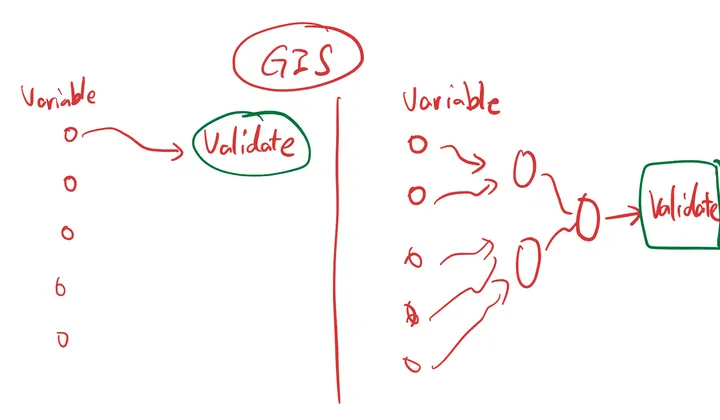
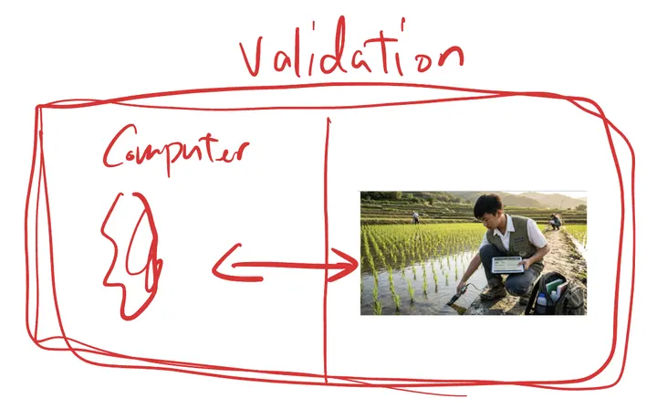

GEMS Taiwan · GIS handbookGEMS Taiwan · GIS 手冊
In summer 2026 a group of GEMS students learned QGIS over ten classes and turned it into the Geospatial Analysis page of the ReLEAF wiki. This handbook keeps every link, dataset, map, homework brief and piece of feedback from that course, in the order you need them, so the next team can start where this one finished. 2026 年暑假，一群 GEMS 學生在十堂課裡學會 QGIS，並把成果寫成 ReLEAF wiki 的 Geospatial Analysis 頁面。這本手冊保留了那門課的每個連結、資料集、地圖、作業要求和回饋，按照學習時需要的順序排好，讓下一屆從這一屆結束的地方開始。
Five stops. The first three take about two weeks if you follow the course pace of two classes a week.五站。照原本一週兩堂的節奏，前三站大約兩週。
The course was set up as a decision tool for the whole project: to build the project story, feed the math model's predictions, put evidence under business-plan decisions, and supply data for the data physicalization. Two drawings from the team's milestones channel say what it adds. 這門課的定位是整個專案的決策工具：建立專案故事、提供數學模型預測的輸入、為商業計畫的決定提供證據、支援資料實體化。團隊 milestones 頻道的兩張手繪圖說明了它多做到了什麼。


The plan posted on 1 July, before the first class. It held: the course ended on 6 August and the wiki page went live in October.7 月 1 日、第一堂課之前公布的規劃。實際進度大致照走：課程 8 月 6 日結束，wiki 頁面 10 月上線。
| Stage階段 | Dates日期 | Goal目標 |
|---|---|---|
| 1 | 7/2 – 7/18 | Main storyline; one strong combined map; every student can do basic QGIS tasks alone主要故事線；一張好的組合地圖；每位學生能獨立完成 QGIS 基本操作 |
| 2 | 7/18 – 8/6 | Field-trip validation; first draft of the wiki text校外考察驗證；wiki 文字初稿 |
| 3 | 8/6 – 8/31 | Deeper analysis if needed; writing, formatting, polishing需要時做更深入的分析；寫作、排版、修飾 |
| Dr. Daniel Bloom | Instructor. Historical GIS specialist, creative director of a UC Berkeley project. Taught every class and set the homework.講師。歷史 GIS 專家，UC Berkeley 計畫的創意總監。負責每一堂課與作業。 |
| Anna, Olivia, Eva, Renee | The students who stayed through the course and made the maps on this site. Sophia, Ethan and Audrey were named to the training on 1 July as representatives of other sub-teams.全程上完課、做出本站地圖的學生。7 月 1 日公布的受訓名單另有 Sophia、Ethan、Audrey，作為其他小組的代表。 |
| Jessie | Instructor who set the project direction on 30 July: precision agriculture, fertilizer overuse, heat and humidity stress.7 月 30 日定下專案方向的指導老師：精準農業、肥料過度使用、高溫與濕度逆境。 |
| Timmy, Vivian | Set up the course, the server and the schedule.安排課程、伺服器與時程。 |